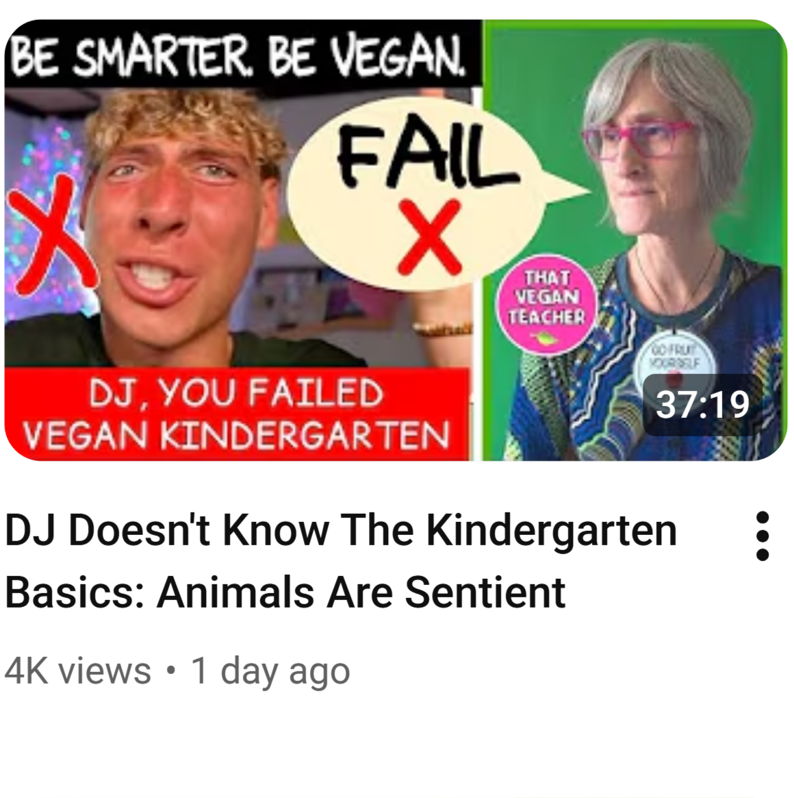
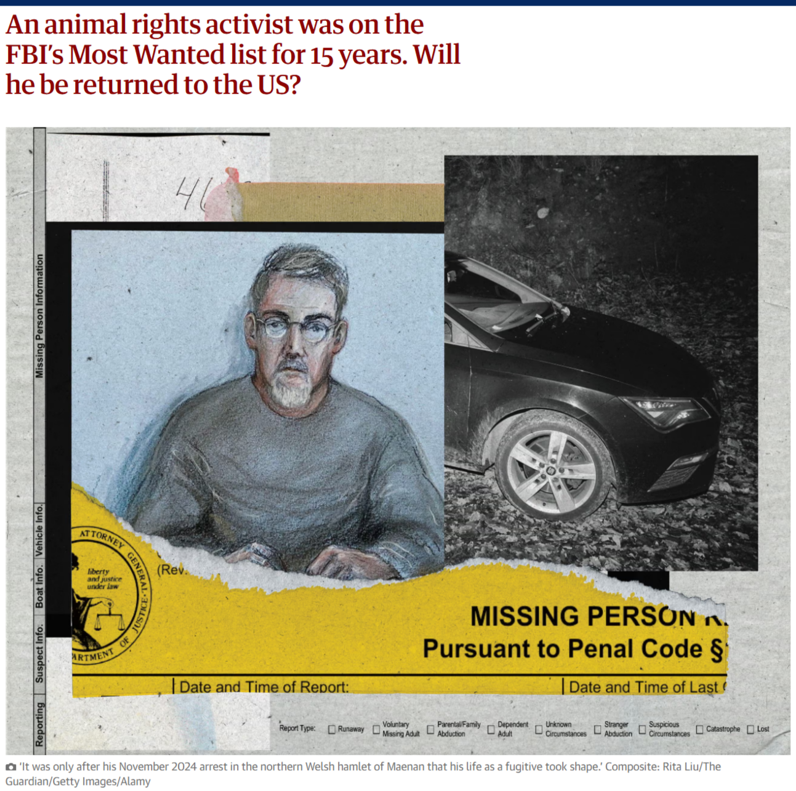
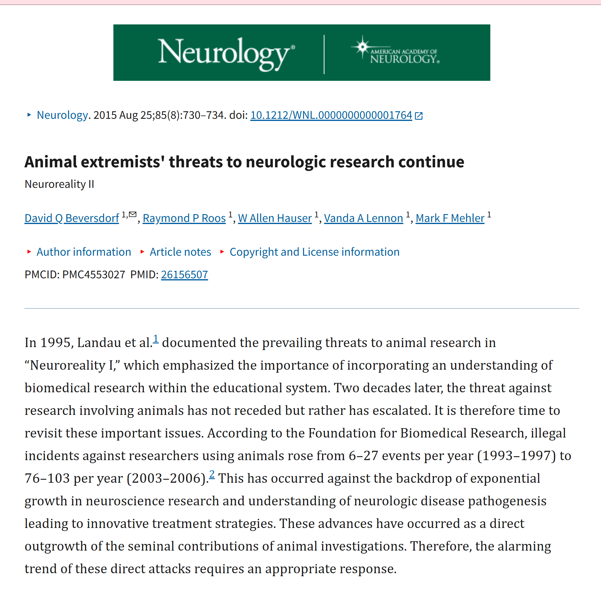

You started out as someone health-conscious, curious about nutrition, ethical eating, and living a lifestyle that aligned with your values. You followed vegan recipes, watched documentaries, and admired influencers who promoted kindness to animals. But before you knew it, you got trapped. Now you are part of the ALF community. The Animal Liberation Front, or ALF, is a clandestine network of activists that takes direct action to free animals from farms, labs, and circuses. In this world, extreme tactics are normalized: property destruction, break-ins, and open rescues are seen as necessary steps to fight systemic animal exploitation. As a result, you are pulled deeper into a cycle of secrecy, justification, and radical activism, your online and offline world reinforcing the belief that any action is acceptable in the name of saving animals.

In the real world, these beliefs have had serious consequences. The more extreme corners of the ALF sphere have fueled online harassment campaigns against researchers, farmers, and even ordinary people who simply work in animal-related fields. Scientists conducting medical research have faced threats and sustained pressure campaigns that have forced some labs to shut down, halting studies that were essential for developing new treatments and life‑saving medicines. What begins as moral outrage often escalates into intimidation, doxxing, and attempts to shame people out of their work entirely. Beyond the digital sphere, some supporters have turned to dangerous forms of direct action. One of the most well‑known examples is Daniel Andreas San Diego, an American fugitive linked to bombings targeting companies involved in animal research. His case became a symbol of how quickly activism can cross into violent extremism, putting lives at risk and pulling the movement into the spotlight for all the wrong reasons. These actions don’t just cause damage. They harden divisions, undermine legitimate advocacy, and create an environment where fear replaces dialogue.

